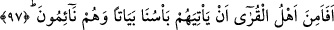
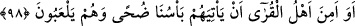

gümüşten yapardık.” (ez-Zuhruf, 43/33)
Farsça tefsirde şöyle denilmektedir: Sülemî, Halâik adlı eserinde şöyle buyurur:
Eğer kullarım vadedilen yere gitselerdi ve muhalefetten sakınsalardı veya benim
tehdidimden korksalardı, onların kalplerini kendi müşahede nurumla aydınlatırdım.
Gökyüzünün bereketi buna işarettir. Onların uzuvlarını kendi kulluğumla süslerdim -
yeryüzünün bereketi de bundan ibarettir-
Yerde ve gökteki kerem kapıları
Secde ehli için açılır
Yeryüzünde taat kanatlarını çırp
Marifet semasına öylece uç
97. Yoksa o ülkelerin halkı geceleyin uyurlarken kendilerine azabımızın
gelmeyeceğinden emin mi oldular?
Cümledeki soru, vaki olanı inkar ve kötü görmek anlamındadır. Yoksa böyle bir şeyin
vuku bulmasını inkar ve reddetmek için değildir.
Ey Muhammed, “peki o ülkelerin halkı,” Mekke ve çevresindeki bölgelerin
halkından seni yalanlayanlar, bu yalanlamadan sonra “geceleyin kendileri” yataklarında
ve evlerinde gafletleri sebebiyle azabdan habersiz olarak “uyurlarken azabımızın
kendilerine gelmeyeceğinden emin midirler?”
98. Ya da o ülkelerin halkı kuşluk vakti eğlenirlerken kendilerine azabımızın
gelmeyeceğinden emin mi oldular?
Ya da o ülkelerin halkı, kuşluk vakti” güneşin ışığı yükseldiği zaman
“eğlenirlerken” aşırı gafletleri sebebiyle himmet ve gayretlerini, ne din ne de dünya
bakımından faydası olmayan işlere sarfederken veya kendilerine bir fayda
sağlamayacak dünyevî işlerle meşgul olurlarken “azabımızın onlara gelmeyeceğinden
emin midirler?
Çünkü dünyasıyla meşgul olup ahiretinden yüz çeviren kişi, oynayıp eğlenen kimse
hükmündedir. Sözün özü şudur ki peygamberleri yalanladıktan sonra ne gündüz, ne gece
ilâhî azabdan emin olmak mümkün olmadı.